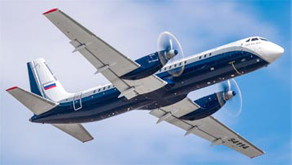

ИЛ-114-300

- Разработчик: ОКБ Ильюшина
- Страна: Россия
- Первый полет: 2000
- Тип: Пассажирский ближнемагистральный самолет
Ил-114-300 — это региональный пассажирский турбовинтовой самолёт, разработанный Авиационным комплексом имени С. В. Ильюшина. Он предназначен для эксплуатации на местных воздушных линиях и является модернизированной версией турбовинтового самолёта Ил-114.
Самолёт создан специально для отечественных местных авиалиний, в том числе для использования в регионах со слабой аэродромной инфраструктурой и в сложных климатических условиях.
Ил-114-300 имеет длину 26,9 метра, высоту 9,05 метра и размах крыла 29,87 метра. Он оснащён двумя турбовинтовыми двигателями ТВ7-117СТ-01 мощностью 2900 лошадиных сил каждый. Максимальная взлётная масса самолёта составляет 23,5 тонны, а максимальная полезная нагрузка — 6,8 тонны.
Самолёт способен развивать крейсерскую скорость до 450 километров в час и выполнять полёты на расстояние до 1400 километров. Он может брать на борт до 68 пассажиров и имеет два члена экипажа.
| Летно технические характеристики | |
|---|---|
| Модификация | Ил-114-300 |
| Размах крыла максимальный, м | 30.00 |
| Длина, м | 26.88 |
| Высота, м | 9.324 |
| Площадь крыла, м2 | 81.90 |
| Масса, кг | |
| - пустого самолета | |
| - нормальная взлетная | 23500 |
| Тип двигателя | 2 ТВД ТВ7-117СТ-01 |
| Мощность, э.л.с. | 2 х 2900 |
| крейсерская скорость, км/ч | 500 |
| Практическая дальность с 1300 кг груза, км | 5000 |
| Практический потолок, м | 7600 |
| Экипаж, чел | 2 |
| Полезная нагрузка: | до 64-68 пассажиров или 6800 кг груза |